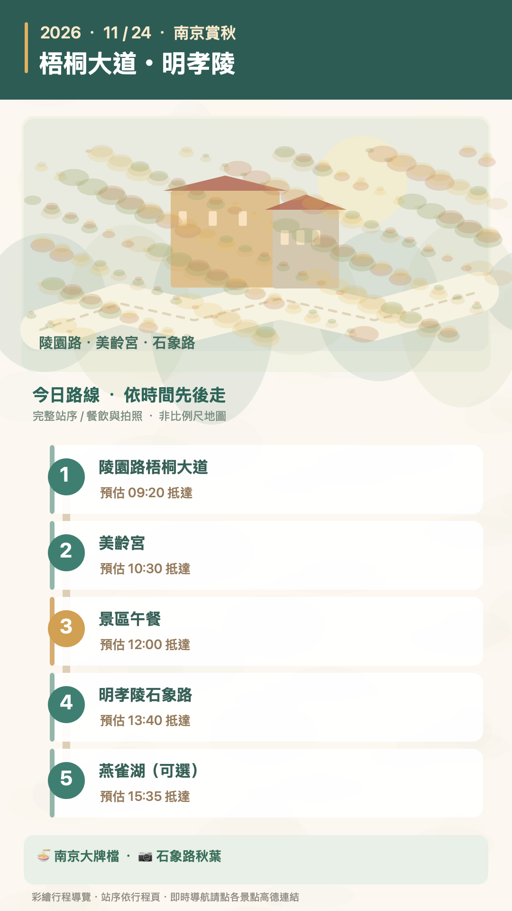

陵園路・美齡宮・明孝陵
🍁 11-24｜陵園路・美齡宮・明孝陵｜路線彩繪圖

直式彩繪行程圖依當日站序與餐飲繪製；非比例尺路網，精確路線請點高德導航。現場使用版：先看下一站，遇到疲累可改搭觀光車。去程與回程分開，不必在一長串圖文中找路。
2026/11/24（週二）。以下為官方已公布的站點與交通規則，不是當天即時班次。苜蓿園站哪個出口有可用電梯及扶梯方向仍未完成官方逐出口確認；現場以站內無障礙標示為準。
若出站需要協助，可在站內看無障礙指示，或撥南京地鐵無障礙專線 025-88051203；尚未取得苜蓿園站官方逐出口電梯配置，因此不標指定號碼。
去程｜先賞陵園路
1苜蓿園站（2 號線）出站先找電梯或較少台階出口；不可直接以未核實的出口號碼導航。
高德 App 需事先安裝且在 iPhone 上開啟；Apple 地圖會先顯示路線建議，核對地點後按「出發」；高德此入口只負責搜尋，不保證直接導航。
2陵園路梧桐大道沿開放步道賞秋，不走車道。景區管制可能依客流變動。
高德 App 需事先安裝且在 iPhone 上開啟；Apple 地圖會先顯示路線建議，核對地點後按「出發」；高德此入口只負責搜尋，不保證直接導航。
3美齡宮／十朝文化園賞建築與林蔭後，至官方觀光車站查看車輛與班次。
高德 App 需事先安裝且在 iPhone 上開啟；Apple 地圖會先顯示路線建議，核對地點後按「出發」；高德此入口只負責搜尋，不保證直接導航。
想少走一段？
官方有苜蓿園站往美齡宮的部分接駁線，其中動態線限定非高峰工作日；請先查當日是否運行。若想拍陵園路梧桐大道，則可按體力選擇步行觀景。
查官方接駁線與時間🧭 兩種走法｜入口不同，別走錯
A｜想拍梧桐大道與石象路：苜蓿園站 → 陵園路梧桐大道 → 美齡宮周邊 → 明孝陵 5 號門入園；從此門可就近遊覽石象路。這是步行賞秋線，不是觀光車直達路線。
B｜希望少走路：苜蓿園站 → 陵園路／美齡宮 → 美齡宮（十朝文化園）站搭車 → 海底世界 → 東郊國賓館 → 明孝陵 7 號門下車；從此門進園較靠近陵宮。
※ 5 號門與 7 號門是不同入口。無法把兩條路線合併畫成同一條精確步行線；回程依實際離園門決定。景區交通通告
景點重點不同：5 號門靠近石象路，7 號門靠近陵宮；明孝陵園內另有串聯 1、2、3 號門與金水橋的接駁線，能否銜接你的最終離園門須當天確認。
🍜 11/24 走到哪裡吃｜跟行程走
09:20–11:30 陵園路梧桐大道 → 美齡宮｜先拍照，不必為餐廳折返。
12:00–13:15 石象路／美齡宮周邊午餐 → 飯後依體力走明孝陵5號門石象路，或到十朝文化園站搭車去7號門。
1｜雲几・紫金山（梧桐大道店）茶飲、正餐｜石象路7–9號
12:00｜美齡宮周邊先吃午餐，接續明孝陵5號門／石象路
2｜六朝瑞庭・匠心淮揚菜（中山陵店）淮揚菜、坐著吃午餐｜石象路7號（雲几西側約50米）
12:00｜美齡宮後午餐的第二選擇，實際入店方向以地圖定位為準
🍽 備選｜南京大牌檔（中山陵店）（中山門大街9號 紫金文化廣場F1）
這家店在較靠近苜蓿園站的中山門大街，適合調整行程時用餐或回程有經過再吃；不是美齡宮後主線午餐。
店家地址出自鐘山景區官方餐飲資料（2025 年）及攜程店家資料；是否營業、排隊與優惠請以當日門店為準。尚未核實從美齡宮到各店的逐段無障礙人行路線，不標示步行分鐘數。
🚌 觀光車怎麼搭｜美齡宮 → 明孝陵
在 美齡宮（十朝文化園）站候車，確認站牌方向往明孝陵 7 號門，沿途依序停靠：
- 美齡宮（十朝文化園）這段上車
- 海底世界途中站
- 東郊國賓館途中站
- 明孝陵 7 號門這段下車
💴 已公布票價：單次 ¥10；當日不限次 ¥30（不含特色講解線）。
11/24 是週二；苜蓿園站另有非高峰工作日才營運的動態線，與美齡宮這段接駁須分開確認。
※ 發車時間、方向、臨時管制以當日現場公告為準。需要時查官方最新資料
4明孝陵 7 號門到站後依現場景區步道與入口標示參觀。園內精確步行路線及你最後使用的離園門尚未核定，不畫虛構折線。
高德 App 需事先安裝且在 iPhone 上開啟；Apple 地圖會先顯示路線建議，核對地點後按「出發」；高德此入口只負責搜尋，不保證直接導航。
🎫 台胞證購票｜兩人實際操作
你們兩人都有微信；先生有大陸手機號，可由先生用微信官方小程式填聯絡號、選兩名遊客。
美齡宮¥30／人
明孝陵¥70／人
兩景點合計¥100／人
兩人預估共 ¥200；官方四景區聯票亦為 ¥100／人，若 11/25 還要參觀音樂台、靈谷景區，可考慮聯票，購買前確認有效期間與可入場次數。
① 行前用微信由先生在微信搜尋「南京钟山风景区」或「中山陵园票务中心」官方入口 → 門票購買 → 選 11/24 與票種 → 分別新增兩位遊客；聯絡電話填先生大陸門號，姓名與台胞證號須與證件一致。
② 遇到證件選項問題先找「台灣居民來往大陸通行證／台胞證」證件類型；若小程式只有大陸居民身分證選項，不要拿台胞證號硬填身分證欄位，改用現場人工窗口購票。
③ 付款後保留微信訂單、入園 QR Code 與兩本台胞證正本；入園先向檢票人員出示訂單或掃碼。是否需要換紙票，景區官方尚未公布一致的台胞證規則，不要未經詢問先去排換票隊。
④ 如果不能掃碼／沒有買成官方允許美齡宮、明孝陵入口現場購票；直接持兩本台胞證到售票／人工服務窗口，出示微信訂單或請人員處理證件驗票。
※ 已查證：明孝陵、美齡宮都可現場購票；官方列有微信購票管道。台胞證線上驗證與 QR／人工核票可能依系統不同；以當日售票人員指引為準。票務電話 025-84437786（08:30–17:30）。官方購票資訊
回程｜不強迫原路折返
先確定實際離園門，再選擇回程交通。以下是官方已公告站點，不等於當日現場已確認有車。
A若從明孝陵 7 號門離開官方公布孝陵衛站—明孝陵 7 號門接駁線，雙端列有首末班資訊。先在 7 號門確認往孝陵衛方向的候車點。
高德 App 需事先安裝且在 iPhone 上開啟；Apple 地圖會先顯示路線建議，核對地點後按「出發」；高德此入口只負責搜尋，不保證直接導航。
B若從明孝陵 1／2／3 號門離開不能直接套用 7 號門的回程。官方另有 1、2、3 號門及金水橋間的內部線，依當天運行方向、體力與最終出口選擇。
查看官方景區內部線
不把「明孝陵7號門」預設成你必定離園的位置，也不預設觀光車站點與地鐵出口相連的步行距離。
11/24｜陵園路・美齡宮・明孝陵 · 餐食／拍照／活動／探店
當日重點直接列在路線頁內；詳細地址、營業與優惠仍依原行程逐家核對。下方內容取自本路線原頁，不補造未查到的商家。
🍜 餐食・休息
- 🚶 走到順路餐飲點15–25分📸 用餐60–75分⚠️ 別為餐廳折返
- ⏱️ 慢走1.5倍｜到達機位與拍照時間08:30出發／前站 → 約09:20抵達｜陵園路梧桐大道10:10出發／前站 → 約10:30抵達｜美齡宮11:45出發／前站 → 約12:00抵達｜景區午餐13:15出發／前站 → 約13:40抵達｜明孝陵石象路15:10出發／前站 → 約15:35抵達｜燕雀湖（可選）📍 陵園路梧桐大道 高德📍 美齡宮 高德📍 明孝陵 高德🍜 南京大牌檔 中山陵
- 09:20–11:30 陵園路梧桐大道 → 美齡宮｜先拍照，不必為餐廳折返。
- 12:00–13:15 石象路／美齡宮周邊午餐 → 飯後依體力走明孝陵5號門石象路，或到十朝文化園站搭車去7號門。
- 茶飲、正餐｜石象路7–9號
- 12:00｜美齡宮周邊先吃午餐，接續明孝陵5號門／石象路
📷 拍照・觀景
- 🚶 飯店出發約50–70分含地鐵、出站慢走📸 拍照35–45分⚠️ 車流多，不站車道
- 🚶 步行或接駁20–30分📸 建築與樹景拍照45–60分⚠️ 空拍角度改地面拍
- 🚶 接駁／步行25–40分📸 石獸彩葉拍照60–75分⚠️ 神道較長，保留休息
- 🚶 移動25–40分，需依實際出口調整📸 拍照25–35分⚠️ 疲累就直接回飯店
- 📷 看什麼・怎麼拍陵園路拍梧桐透視；美齡宮看建築；明孝陵神道石像
- 從安全人行道拍金黃梧桐的道路透視，晨間柔光較好。
🎟 活動・參觀
- 到達時間是估計，含慢走及必要轉乘緩衝；不是精確定位或預約時段。
- 🚶 步行或接駁20–30分📸 建築與樹景拍照45–60分⚠️ 空拍角度改地面拍
- 📷 看什麼・怎麼拍陵園路拍梧桐透視；美齡宮看建築；明孝陵神道石像
- 原圖 No.2 為高空環形林道，地面無法複製；改拍建築屋頂與周邊樹冠。
- 📍 站位：建築旁開放區取景：屋頂＋樹冠
- 美齡宮📷 查看美齡宮實拍照片園區相對位置示意景區入口入口／起點拍美齡宮建築主景📷 建築外開放區→ 朝建築與樹冠🧭 開啟高德搜尋位置
🛍 探店・優惠
- 🚶 飯店出發約50–70分含地鐵、出站慢走📸 拍照35–45分⚠️ 車流多，不站車道
- 🚶 移動25–40分，需依實際出口調整📸 拍照25–35分⚠️ 疲累就直接回飯店
- ⏱️ 慢走1.5倍｜到達機位與拍照時間08:30出發／前站 → 約09:20抵達｜陵園路梧桐大道10:10出發／前站 → 約10:30抵達｜美齡宮11:45出發／前站 → 約12:00抵達｜景區午餐13:15出發／前站 → 約13:40抵達｜明孝陵石象路15:10出發／前站 → 約15:35抵達｜燕雀湖（可選）📍 陵園路梧桐大道 高德📍 美齡宮 高德📍 明孝陵 高德🍜 南京大牌檔 中山陵
- 12:00｜美齡宮後午餐的第二選擇，實際入店方向以地圖定位為準
- 這家店在較靠近苜蓿園站的中山門大街，適合調整行程時用餐或回程有經過再吃；不是美齡宮後主線午餐。
- 店家地址出自鐘山景區官方餐飲資料（2025 年）及攜程店家資料；是否營業、排隊與優惠請以當日門店為準。尚未核實從美齡宮到各店的逐段無障礙人行路線，不標示步行分鐘數。
原有美團／大眾點評入口保留：
查看原優惠入口 2彩繪圖驗收：尚未核准獨立彩繪定位圖；候選圖不得視為精確地圖。現場移動以實際導航及景區指示為準。